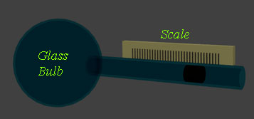
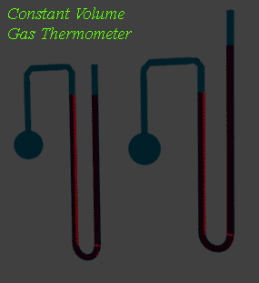

Bimetallic Strip Thermometer
Resistance Thermometers
Thermocouple Thermometer
Junction Semiconductor Sensor
Radiation Pyrometer
In previous days the thermometer was only used for measuring human body temperature and atmospheric temperature, but now days due to drastic industrial developments, it is essential to measure temperature of various situations and conditions much accurately and precisely. To achieve required accuracy and precision of temperature measurement, different types of temperature sensor have been developed. Depending upon the working principle of temperature sensors, they have broadly classified as,
1) Liquid and gas thermometer
2) Bimetallic strip thermometer
3) Resistance thermometers, which include RTD and Thermistor
4) Thermocouple
5) Junction semiconductor sensor
6) Radiation Pyrometer.
scale
Let's us discuss all types of temperature sensor one by one in brief.
Liquid and Gas Thermometer
This is the oldest process of temperature measurement. The method is very simple. In gas thermometer, one glass made bulb is filled with some specific gas and it is observed the different volumes of the gas inside the bulb at different temperatures. Here, Charles Law of Gas is applied, this law states that volume of gas is directly proportional to kelvin temperature of the gas when pressure is kept constant. In gas thermometer, the temperature is calibrated against volume of the gas inside the bulb, considering the pressure of the gas is constant as shown in the basic figure above.  The reading of this type of temperature sensors is not quite reliable as it is highly effected by atmospheric pressure. Another little bit improved version of gas thermometer was also introduced, where volume of the gas inside the bulb is kept constant at all temperatures by adjusting the level of capillary tube attached to the bulb and observed what is the change of head of the liquid in side the capillary tube. Here, also Charles Law of Gas is applied. As we know this law also states that pressure of an enclosed gas is directly proportional to its kelvin temperature when its volume is constant. Here, changed pressure of the gas is calibrated to its temperature. As both of these gas thermometers sense temperature, they can be considered as oldest and simplest version of temperature sensor.
Bimetallic Strip Thermometer
This is another simple form of thermometer. Here two strips of different metals are joint together to form a bimetallic strip. The coefficient of expansion these two metal must be different enough. Due to these different coefficient of expansion, the metal strips will be expanded or contracted differently for the same temperature change in surrounding. Consequently, whole bimetallic strip assembly will bend or be deformed in shape. This mechanical deformation of the strip, is then caught by a pointer in an indication dial by means of lever - gear arrangement.
Resistance Thermometers
We know that resistance of any material changes for change in temperature. There is a clear relation between resistance and temperature of a material. This relation can be utilized for temperature measurement. The rate of change of resistance per degree centigrade is known as temperature coefficient of resistance of the material. This coefficient can be either positive or negative. Generally, resistance of metal increases with increase of temperature - hence temperature coefficient of resistance of metal is referred as positive, where as resistance of semiconductor decreases with increase in temperature - hence temperature coefficient of resistance of semiconductor is referred as negative. Although, both metal and semiconductor can be used as temperature sensor. When metal is used as sensor the thermometer is referred as resistance temperature detector or RTD on the other hand when semiconductor is used for same purpose the thermometer is called thermistor.
Thermocouple Thermometer
In a thermocouple system, two dissimilar metal conductors are connected together at their two ends. Due to this, two common junctions are created and if these two common junctions are exposed to two different temperatures, there will be a net thermal emf produced in the circuit. The value of produced emf depends upon the nature of these two dissimilar metals and the temperature difference between their common junctions. Hence, the temperature difference can easily be calibrated from the emf generated for that. This type of temperature sensors is mainly used in industrial purposes.
Junction Semiconductor Sensor
A p-n junction diode and bipolar junction transistor have very strong dependency on temperature. If a diode or a BJT is connected a constant current source and if the forward biased voltage of these devices are measured, it would be observed that due to change in temperature there would be very much change in forward biased voltage. Hence this forward biased voltage can easily be calibrated in temperature such as the value of this voltage gives direct temperature measurement. these type of temperature sensors are very sensitive and mainly used in electronics purposes.
Radiation Pyrometer
This is very modern type of temperature sensor used where it is impossible to measure temperature by direct contacting the object whose temperature to be measured with the thermometer. Some time it is quite necessary to monitor the temperature of very hot furnece where it is not possible place a conventional thermometer. In that case radiation pyrometer is used to measure its temperature from far away only by sensing the electromagnetic radiation comes out from the object. This technology of temperature measurement can also be used in high voltage system. If temperature of any point in the onload power network to be measured from a safe distance, this technology is quite usable. A pyrometer thermometer catches and senses the thermal electromagnetic radiation, emitted from an object and gives the temperature of the object as the instrument is calibrated so.
 by
by